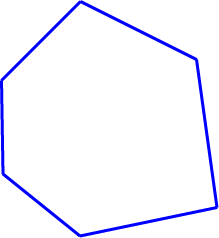

1 문항별로 점수를 매기고, 유형별로 점수를 합산하여 정리해 보자.
- 매우 그렇다: 5점
- 그렇다: 4점
- 보통이다: 3점
- 그렇지 않다: 2점
- 전혀 그렇지 않다: 1점
| 직업 흥미 유형 | 문항 | 점수 | 유형별 총점 |
|---|---|---|---|
| 현실형 (R) |
1. 음식을 만드는 것을 좋아한다. |
3 |
11 |
| 2. 치안 유지나 응급 구조 활동에 관심이 많다. |
1 |
||
| 3. 기계를 다루거나 컴퓨터 조립하는 것을 좋아한다. |
4 |
||
| 4. 화초나 채소를 기르고 정원을 가꾸는 것을 좋아한다. |
3 |
||
| 탐구형 (I) |
5. 탐구심이 강하고 논리적이며 분석적이다. |
2 |
13 |
| 6. 인간의 심리 과정과 행동 연구에 관심이 많다. |
4 |
||
| 7. 사람의 병을 고치고 수술하는 것에 관심이 많다. |
3 |
||
| 8. 자연 현상이나 물체의 작동 원리를 연구하는 것에 관심이 많다. |
4 |
||
| 예술형 (A) |
9. 자유분방하고 개성적이다. |
4 |
16 |
| 10. 상상력과 창의성이 풍부하다. |
4 |
||
| 11. 정해진 것보다는 변화와 다양성을 선호한다. |
5 |
||
| 12. 간결한 대화와 그림을 넣어 이야기 만드는 것을 좋아한다. |
3 |
||
| 사회형 (S) |
13. 사회 봉사 활동에 관심이 많다. |
3 |
12 |
| 14. 사람들과 어울리는 것을 좋아한다. |
3 |
||
| 15. 다른 사람에게 친절하고 이해심이 많다. |
3 |
||
| 16. 친구의 고민을 해결해 주는 것에 관심이 많다. |
3 |
||
| 진취형 (E) |
17. 외향적이고 낙관적이며 열정적이다. |
2 |
8 |
| 18. 지도력이 있고 주변 사람들을 잘 설득한다. |
2 |
||
| 19. 경제적 이익을 위해 다른 사람을 이끌고 통제하는 것을 좋아한다. |
1 |
||
| 20. 연예인이나 운동 선수를 관리하고 활동을 보조하는 것에 관심이 많다. |
3 |
||
| 관습형 (C) |
21. 빈틈이 없고 책임감이 강하다. |
3 |
8 8
|
| 22. 계획적이며 사무 능력이 좋다. |
1 |
||
| 23. 도서관에서 책을 관리하는 일에 관심이 많다. |
2 |
||
| 24. 정해진 원칙과 계획에 따라 자료를 정리하고 조작하는 일을 좋아한다. |
2 |
2 유형별 총점을 그래프로 정리해 보고, 가장 점수가 높은 직업 흥미 유형 두 가지의 특성과 대표 직업을 살펴보자.
현실형
(R)
탐구형
(I)
예술형
(A)
사회형
(S)
진취형
(E)
관습형
(C)
20
15
10
5
